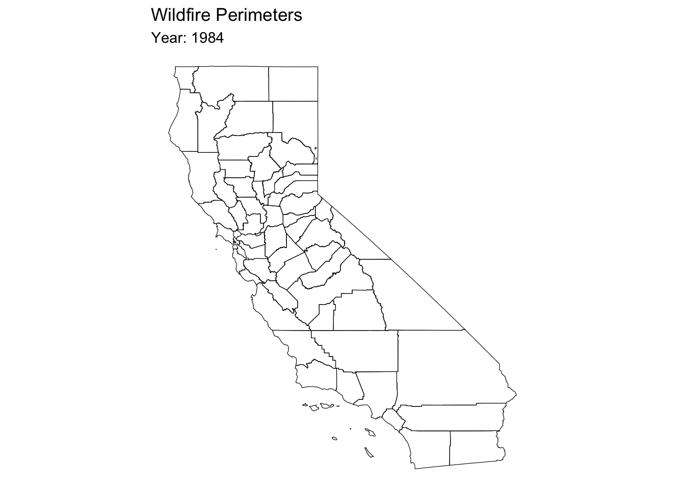
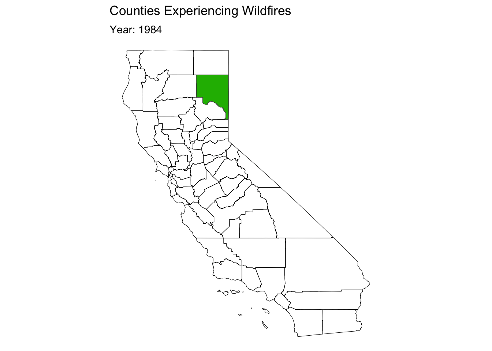

Examining California Wildfires
Project 2
Research Question
How does the burden of wildfires compare across different CA Counties, and how has this changed over time?
I wanted to compare the intensity and frequency of wildfires across CA Counties over the years to better understand this issue, particularly as this issue progresses.
To do this, I created spatio-temporal visualizations of wildfires in California specifically considering:
Frequency of fires: Number of fires counties experience in a year, Percent of total yearly fires occurring in each county
Intensity of fires: Acres burnt in each county, Percent of total acres burnt in a year occuring in each county, average fire size (total acres burnt / number of fires)
The Data
fires_sf: wildfire perimeters from 1984 - 2020
- WFIGS Interagency Fire Perimeters data from the National Interagency Fire Center
ca_sf: county boundaries
- from sf package
PAD_CA_sf: land management agency boundaries
- U.S. Geological Survey (USGS) Gap Analysis Project (GAP) in 2022: Protected Areas Database of the United States
fires_county: merged fire data and county boundaries
fire_manage: merged fire data and land management agency boundaries
Shift from Land Management Agencies to Counties
Wildfires from 1984 - 2020
Mapping wildfire perimeters, and indicating counties experiencing wildfires
 
Wildfires Across all of California


Frequency: Total Fires
Comparing Frequency and Intensity over time by County

Intensity: Total Acres Burnt
Comparing Frequency and Intensity over time by County

Intensity: Average Fire Size
Comparing Frequency and Intensity over time by County

Conclusions
- The burden of wildfires is increasing across all of California
- Some counties, like Lassen Riverside and San Diego, are particularly impacted
- Some years had particularly devestating fire seasons: 2018 and 2012
- 2018 had Carr Fire, Mendocino Complex Fire, Camp Fire etc
- 2012 had Rush Fire, Ponderosa Fire etc
- Limitations:
- Some years have less data than others
- Burden could also be measured in destruction, lives lost, impact of smoke etc
- Looking Forward:
- Consideration of fire causes
- Predictive modelling of future wildfire burden